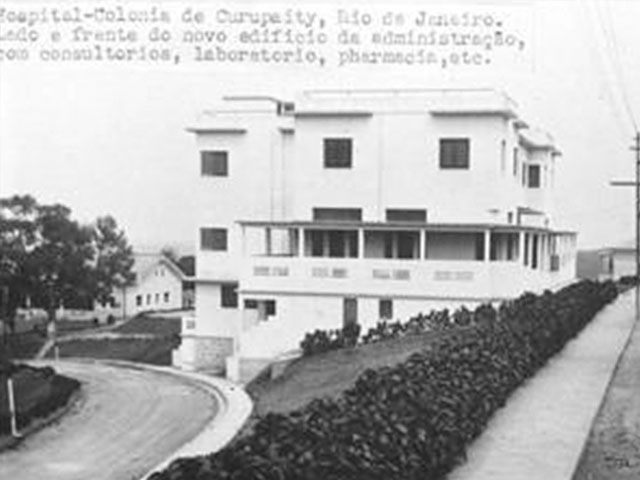

Módulo 2 | Aula 2 Pessoas acometidas pela hanseníase e seus familiares e pessoas acometidas pelas micoses endêmicas
Tópico 1
Hanseníase
O que é Hanseníase?
A hanseníase é uma doença que pertence à categoria de doenças endêmicas, diferente por exemplo da Covid-19 que é uma doença epidêmica, atualmente.
DOENÇA ENDÊMICA
Doença endêmica é aquela que está sempre presente, acontece com determinada frequência e permanece estável ao longo do tempo.
DOENÇA EPIDÊMICA
Doença epidêmica é aquela que surge de repente e em um curto espaço de tempo, acomete muitos casos porque tem surtos e é contagiosa, quando a pessoa doente não está em tratamento.
A hanseníase demora muito tempo para aparecer em uma pessoa, mais de 10 anos às vezes e seus sinais e sintomas são bastante lentos. Por isso, ao perceber algum sinal de alteração de sensibilidade na pele, manchas avermelhadas ou esbranquiçadas, caroços, formigamento, dor nas articulações ou perda de pelo, principalmente nas sobrancelhas, a pessoa deve procurar imediatamente a unidade de saúde do SUS mais próxima da sua residência para uma consulta médica e verificar se os sinais e sintomas estão ligados a hanseníase ou alguma outra doença dermatológica ou neurológica.
A hanseníase é causada por um bacilo chamado Mycobacterium leprae (M. leprae), descoberto em 1870 por Gerhard Armauer Hansen, um médico da Noruega. No corpo humano, esse bacilo tem preferência em se fixar nas células da pele e nas células nervosas periféricas (cabeça, face, olhos, nariz), e pode causar problemas que atingem as mãos e/ou pés e levar à incapacidade física e, consequentemente, a exclusão social; além de outros problemas nas áreas citadas (cegueira, desabamento nasal).
A incapacidade física é considerada um grave problema, geralmente verificada nos casos contagiosos e quando a pessoa não teve nenhum acompanhamento médico ou medicamentoso.
Saiba mais...
Existem quatro formas clínicas da doença: indeterminada, tuberculoide (paucibacilares – PB), dimorfa e virchowiana (multibacilares – MB).
De acordo com o PCDT, é a forma inicial da doença, que surge com manifestações discretas e menos perceptíveis. Geralmente é uma única lesão, sem relevo e mais clara que a pele ao redor.
Apresenta comprometimento restrito da pele e nervos que geralmente se manifesta como lesão cutânea única e bem delimitada.
As lesões cutâneas aparecem em número variável, e apresentam grande variabilidade clínica, como manchas e placas hipocrômicas, acastanhadas ou violáceas predominando o aspecto infiltrativo.
Nesse caso o comprometimento cutâneo pode ser silencioso através da infiltração progressiva especialmente da face com acentuação dos sulcos cutâneos, perda dos pelos dos cílios e supercílios (madarose), congestão nasal e aumento dos pavilhões auriculares.
A Noruega era uma cidade que tinha inúmeros casos de hanseníase e serviu como “laboratório” para Hansen verificar como enfrentá-la. Ele foi o primeiro médico a perceber que o isolamento dos doentes surtia efeitos positivos para seu tratamento.
Para assistir...
Confira Hanseníase em 7 Perguntas | Egon Daxbacher.
Sinopse: Doença é curável e, ao contrário do que muitos ainda pensam é pouco contagiosa. Esclarecemos as principais dúvidas com o Dr. Egon Daxbacher, coordenador do Departamento de Hanseníase da Sociedade Brasileira de Dermatologia.
Fonte: Youtube
Saiba mais...
- Veja mais informações sobre a doença na Biblioteca Virtual em Saúde
Informações históricas
Para conhecer um pouco da história da hanseníase no Brasil, precisamos retroceder no tempo já que ela está presente em nossa sociedade desde a colonização do país.
Para assistir...
Confira a História da Hanseníase.
Sinopse: O Grupo de Estudo e Pesquisa da História das Práticas da Saúde e das Doenças apresenta a série de vídeos "Conhecendo as Doenças". Neste vídeo é abordada a História da Hanseníase.
Fonte: Youtube
A hanseníase é uma das doenças mais antigas, até hoje não se tem clareza se é de origem africana ou asiática, estando presente na história há séculos, mas sabe-se que não existia no país antes da chegada dos colonizadores portugueses.
Ao falarmos sobre isolamento compulsório das pessoas atingidos pela 'lepra', estamos falando de um tempo bem anterior ao nosso, com quase cem anos de diferença. Naquela época estava presente o sucesso da experiência de Hansen na Noruega que, como já vimos, conseguiu praticamente acabar com a lepra no país isolando as pessoas acometidas pelo agravo.
Por volta de 1930, no Brasil, as pessoas diagnosticadas com lepra eram isoladas de suas famílias, retiradas do convívio social e internadas em leprosários, que foram sendo construídos majoritariamente pelo poder público.
Durante algumas décadas, pelo menos até 1950, esse era o tratamento recomendado e a medicina não tinha medicamentos eficazes para enfrentá-la, apenas o isolamento compulsório para todos os casos.
Saiba mais...
Para assistir...
Confira a reportagem: Últimos sobreviventes da “lepra” ainda lembram o período de isolamento na Colônia Santa Isabel.
Sinopse: Segundo relatos, mais de dez mil diagnosticados com hanseníase foram internados à força e muitos permanecem lá. A reportagem esteve dois dias na colônia conversando com os antigos moradores.
Fonte: Youtube
1956
Em 1956, as internações compulsórias em leprosários foram questionadas com mais firmeza com a Portaria 160 de 23/07/1956, do MS, que instituía alta para as pessoas internadas que deveriam ter a continuação de seu tratamento em dispensários (um posto de saúde, como as UBSs). As pessoas acometidas eram observadas no decorrer de um ano ou mais e se não apresentassem reações da doença, obtinham a alta para o tratamento fora do leprosário.
1962
O Decreto 968 de 07/05/1962, foi um outro passo para terminar com as internações obrigatórias. Porém, mesmo assim, elas continuaram até meados dos anos 1980, devido a discriminação existente em torno da doença e do doente, que representava um 'perigo social' por serem também desconhecidos e temidos.
1972
Em 28/12/1972 foi implantada a Portaria 236 do MS, que ditou normas para as internações das pessoas acometidas, desobrigando que todos os casos encontrados fossem internados compulsoriamente. A internação foi prevista apenas quando houvesse alguma complicação durante o tratamento.
1976
Quatro anos depois, em 14/05/1976, foi publicada a Portaria 165, também do MS, informando que as hospitalizações deveriam ser feitas em hospitais gerais e não apenas nos antigos leprosários, já estabelecendo uma diferença entre asilos e hospitais gerais. Nessa portaria ainda, é implicada a substituição do termo “lepra” para “hanseníase”.
1987
Apenas em 09/10/1987 foi publicada Portaria 498 do MS, que revê a Portaria 165/76 e definiu que as pessoas acometidas deveriam permanecer um tempo específico nas instituições e que este tratamento seria somente ambulatorial; não haveria necessidade de internação compulsória. À essa altura, todos os leprosários já se encontravam abertos e com livre acesso.
Como se pode notar, o processo se deu de forma atenuada e aos poucos com as Portarias do MS que oficializavam as formas de tratamento ambulatorial para todos as pessoas acometidas, independentemente do tipo clínico da doença. Não devemos esquecer que a poliquimioterapia já estava em uso em todo o Brasil, tendo sido implantada em 1986 de forma gradual pelos estados.
Estigma social
Por iniciativa do médico paulista Abrahão Rotberg, em meados da década de 1970, começou um movimento no sentido de mudar o termo lepra que carregava consigo um estigma muito grande.
O termo trazia um peso de doença perigosa, que deixava muitas marcas no corpo. O indivíduo deveria ser apartado da sociedade para não infectar outras pessoas.
Essa era uma imagem do passado, que não condizia mais com a realidade e fazia menção a um tempo em que não havia medicamentos para tratar a doença. Desde a década de 1950, já havia remédios (sulfas e antibióticos), o que propiciou as altas instituídas pela portaria já citada de 1956. No entanto, o estigma construído milenarmente, ainda estava presente nos anos 1970.
Certos medos e representações sociais são difíceis de serem ressignificados, mas atualmente muitas mudanças podem ser identificadas. A Lei 9.010, de 29/03/1995 que formalizou a proibição do uso do termo lepra e seus derivados em documentos oficiais, como leproso, por exemplo, foi um grande passo, mas ainda são necessárias campanhas de esclarecimento à população por parte das autoridades sanitárias.
Infelizmente, ainda hoje há uma parcela da população que desconhece que a hanseníase, é uma doença que tem tratamento e cura disponíveis no SUS, não necessita de internação e nem isolamento compulsório. Portanto, a hanseníase não deve ser temida e nem a pessoa acometida discriminada.
Para assistir...
Confira a Reportagem produzida pela Prefeitura de Piraquara.
Sinopse: Depoimento contundente de Francisca Barros da Silva, a Dide, diagnosticada aos 9 anos de idade, sobre os significados de viver com hanseníase e sua vivência na Colônia São Roque, no município de Piraquara/PR, atual Hospital de Dermatologia Sanitária. Dide atua no Morhan e faz parte da Aliança contra a Hanseníase, sendo um grande exemplo de superação e militância contra o preconceito.
Fonte: Youtube
Saiba mais...
- Leia o artigo científico Estigma social em indivíduos com sequelas da hanseníase
O Ministério da Saúde elaborou a Estratégia Nacional para Enfrentamento da Hanseníase 2019-2022, que tem como objetivo reduzir a carga da hanseníase no Brasil até 2022, sobretudo entre crianças, adolescentes e adultos que tenham incapacidade física já instalada ao serem diagnosticados. Além disso, pretende-se implantar em todos os estados, canais de comunicação para registrar práticas discriminatórias contra pessoas acometidas e seus familiares.
Direitos das pessoas acometidas
Nas décadas de 1970 e 1980, houve inúmeros progressos na indústria farmacêutica na busca por medicamentos mais eficazes e que tivessem um efeito mais rápido no tratamento.
Desde 1986, o Brasil adotou o esquema conhecido como poliquimioterapia, sobre o qual já falamos; uma simplificação nas formas de se chegar ao diagnóstico para os profissionais de saúde que lidam com o cotidiano da doença, a partir de esclarecimentos e uso de linguagem e métodos mais acessíveis para todos os trabalhadores da saúde. Soma-se a isso o esforço para o desenvolvimento de tecnologias que apoiem o diagnóstico, como o teste rápido, pensado para uso em caso de contato. É importante reiterar que o atendimento e tratamento são realizados pelo SUS, criado em 1988 e consolidado em 1990, por meio da Lei 8.080.
Material complementar
- Veja esta publicação do MS sobre Hanseníase e Direitos Humanos
Atenção
O atendimento ao indivíduo de modo centralizado pelo SUS traz benefícios importantes, pois é fundamental para o Ministério da Saúde (MS) conhecer o número de casos (já que a notificação é obrigatória para o Sistema de Informação de Agravos de Notificação – Sinan).
A partir dessas informações, o MS pode formular políticas de saúde que atendam essa população de modo satisfatório, verificar como se dá a evolução dos casos, quais os tipos clínicos, a faixa etária preponderante e quantos pessoas necessitam de tratamentos específicos (como próteses e implantes, fisioterapia, calçados especiais etc.).
Além de determinar a quantidade de medicamentos, a notificação é necessária para atender os estados plenamente e não haver falta de medicamentos, que pode interromper o tratamento e trazer consequências danosas para as pessoas acometidas.
Participação social e familiares
Como você viu anteriormente, a política pública de cuidado às pessoas acometidas, no Brasil e em muitos países, foi o isolamento nos leprosários. Havia muitos estudos na área de saúde que afirmavam que essa era a forma de não contaminar as pessoas saudáveis, que estavam fora do leprosário; era mais oportuno isolar os doentes que ficavam confinados nestas instituições, localizadas em regiões afastadas dos grandes centros urbanos.
No Brasil foram construídos cerca de 40 leprosários entre 1920 até 1960, com muitas pessoas internadas, como o Asilo de Pirapitingui, atual Hospital Francisco Ribeiro Arantes, na cidade de Itu-SP, que chegou a abrigar mais de 2 mil indivíduos. Várias pessoas acometidas trabalhavam nesses leprosários, exercendo diversas atividades como: preparo de alimentos, limpeza dos espaços da colônia, até mesmo na enfermagem, pois não havia funcionários suficientes para manter a estrutura de funcionamento dos hospitais-colônia.
A ideia dos leprosários era reproduzir a estrutura de uma cidade para que não fosse necessário a pessoa sair de lá. Por isso, mesmo com normas rigorosas de convivência nos leprosários, havia vida social e festividades; as pessoas realizavam atividades lúdicas que traziam um pouco de alento diante da internação compulsória. Havia bandas de música, desfiles de carnaval, torneios de futebol, dentre outras atividades coletivas que, por vezes, eram realizadas com pessoas acometidas de instituições diferentes.
As visitas nos leprosários não eram frequentes, havia regras rígidas de contato entre as pessoas acometidas e os familiares e normalmente era difícil sair para o 'mundo exterior'. Muitos se casavam entre si e constituíam famílias, cujos filhos, em geral, eram tirados dos pais ao nascer para irem para os Preventórios, onde eram internados até a maioridade ou até mesmo adotados ilegalmente.
Para assistir...
Confira Infância Roubada – Memórias de filhos separados dos pais atingidos pela hanseníase.
Sinopse: O vídeo “Infância Roubada – Memórias de filhos separados dos pais atingidos pela hanseníase” foi produzido pela Defensoria Pública da União com o apoio do Movimento de Reintegração das Pessoas Atingidas Pela Hanseníase (Morhan). A peça audiovisual faz um retrato das consequências da política pública de combate à doença em vigor até meados dos anos 1980, que forçou a separação de famílias inteiras.
Fonte: Youtube
Para refletir...
As pessoas internadas foram identificadas como vítimas de um abuso autoritário e de uma violação dos direitos humanos, por terem sido forçadas ao isolamento. Muitos tiveram que abandonar suas famílias e trabalho por imposição de uma política de saúde.
Uma medida muito importante que ajudou a pautar os direitos sociais das pessoas acometidas, internadas compulsoriamente nos leprosários durante muitos anos, foi a elaboração da Lei 11.520.520, de 18/09/2007. Esta lei ofereceu uma pensão indenizatória vitalícia para os que tinham sido internados até 31/12/1986, como uma forma de restituir seus direitos violados e dar algum conforto financeiro na velhice, considerando especialmente as incapacidades físicas, os problemas de locomoção e o fato de terem sido impossibilitados de exercer um trabalho formal que lhes dessem direito a uma aposentadoria pela previdência social.
Para assistir...
Confira no programa Via Legal: Pessoas que tiveram hanseníase e foram obrigadas pelo Estado a se internar, têm direito à pensão especial.
Sinopse: Ignorância, preconceito e sofrimento. Até 1986, pessoas acometidas pela hanseníase eram obrigadas pelo Estado a ficarem internadas, para evitar o contágio.
Fonte: Youtube
Vale ressaltar que o Brasil é o único país a conceder esta pensão indenizatória, sendo uma atitude pioneira; o Japão, que teve isolamento compulsório até os anos 1990, se pautou neste exemplo e atualmente concedeu uma pensão em moldes parecidos com a brasileira.
Para assistir...
Confira Paredes Invisíveis: Hanseníase - Região Norte.
Sinopse: Documentário sobre a reconstrução da vida de centenas de brasileiros atingidos pela hanseníase, da Região Norte, após a concessão de uma indenização pelo Governo Federal, por terem sido submetidos à internação e isolamento compulsórios em hospitais-colônia. Consiste em uma série de depoimentos sobre a doença, sobre a segregação social, sobre a rotina de isolamento nas ex-colônias, sobre a política de profilaxia da "lepra" até 1986 e sobre o que mudou com a indenização.
Fonte: Youtube
Um aspecto importante na hanseníase é a luta por direitos e igualdade. Nesse sentido, é fundamental falar sobre o Morhan (Movimento de Reintegração das Pessoas Atingidas pela Hanseníase), uma entidade sem fins lucrativos, criada em 6 de junho de 1981, que atua desde então pela garantia e respeito aos direitos das pessoas atingidas pela doença e de seus familiares.
Saiba mais...
O Morhan realiza várias atividades sociais para a conscientização crescente dos cuidados necessários a todas as pessoas atingidas pela hanseníase, além de lutar por sua inserção social plena e sem discriminação e atuar pelo cumprimento de uma agenda de respeito aos direitos humanos e acesso amplo à saúde. Efetua ações com apoio fortemente pautado no trabalho voluntário e estabelece parcerias institucionais, com estados, municípios e união, com objetivo de ajudar a hanseníase a ser considerada uma doença normal, que possui tratamento e cura e auxiliar no enfrentamento ao estigma e discriminação ainda existentes.
Atualmente, há uma grande luta para conceder uma pensão indenizatória aos filhos separados dos pais e educados em preventórios ou educandários ou, até mesmo, postos para adoção de maneira irregular ou criados pelos familiares dos internados nos leprosários. O Morhan tem sido bastante combativo no sentido de conceder igualmente o mesmo direito a estes filhos, uma vez que foram impedidos, por uma política pública de saúde, de conviver com seus pais biológicos e exercer sua afetividade.
Esse é um tema sensível e não há, até o momento, um consenso sobre a concessão da pensão para os filhos separados dos pais. De todo modo, mostra a face cruel de uma doença que deixou marcas profundas nos brasileiros, vítimas deste diagnóstico há muitos anos.
Para assistir...
Confira a reportagem: Familiares separados pela hanseníase lutam por indenização.
Sinopse: Entre as décadas de 1920 e 1960, toda pessoa diagnosticada com hanseníase era obrigada a se separar, deixar até mesmo os filhos, para viver em hospitais-colônia, como o Lauro de Souza Lima, em Bauru. Hoje, o Mohan luta para que o governo reconheça que cometeu um crime com essas famílias.
Fonte: Youtube